Learn the reasoning behind a screen-replacement workflow: preparation, safe opening, battery isolation, connector protection, transfer decisions, reassembly and testing. Exact procedures vary by model.
100% FREE
Read it. See it. Watch it. Practice the reasoning.
This module combines a detailed original lesson, step visuals placed beside the relevant explanation, one focused video slot, a knowledge check and a free PDF for offline study.
Module objective
Learn the reasoning behind a screen-replacement workflow: preparation, safe opening, battery isolation, connector protection, transfer decisions, reassembly and testing. Exact procedures vary by model.
Why this matters
This module focuses on display replacement workflow. The objective is practical competence: understand the reasoning, recognize risk, follow a repeatable process and know what must be verified for the exact iPhone model.
Start with the exact model, not the brand name
“iPhone” describes a family of devices, not one internal design. A safe repair begins by identifying the exact model and, when relevant, the generation or variant. Internal layouts, fasteners, adhesive placement, cable routes, display construction, battery removal methods and post-repair behavior can differ. Before any invasive step, compare the device with reliable model-specific service information. If the device in your hand does not match the reference, stop. A mismatch is not a reason to improvise; it is a reason to verify.
Create a professional workspace
Use a stable, clean, brightly lit bench with enough room to separate the phone, tools and removed parts. Keep drinks, loose metal objects and clutter away. Use parts trays or a screw map so fasteners can return to their original positions. Good organization is not cosmetic. A misplaced screw can damage a component, a forgotten bracket can cause an intermittent connection, and a flex cable trapped during closure can turn a successful repair into a new fault. Slow organization saves time later.
Lithium-ion battery safety is non-negotiable
An iPhone battery stores significant energy in a thin package. Do not puncture, crush, sharply bend or intentionally overheat it. Stop if you see swelling, severe deformation, unusual heat, smoke, hissing, a sweet or chemical odor, or damage that makes handling unsafe. Do not treat a damaged battery as a normal beginner practice task. Use appropriate procedures, a suitable workspace and qualified assistance when risk exceeds your training. A course can teach principles, but it cannot make a hazardous battery harmless.
Use evidence before replacing parts
The symptom should lead the diagnosis. A phone that does not charge can have a cable, adapter, port contamination, battery, software, connector, peripheral or board-level cause. A dark display does not automatically mean the display is defective. Confirm the complaint, inspect the device, reproduce the behavior when safe, and choose tests that separate one hypothesis from another. Replacing the first part that seems related is expensive and teaches poor diagnostic habits.
Document the device before and during service
Record visible condition, the reported fault and functions that work before repair. If appropriate, note display, touch, cameras, audio, charging, buttons, wireless functions and sensors. During disassembly, record unusual findings and preserve the sequence of brackets and screws. Documentation gives you a baseline for final testing and helps distinguish a pre-existing issue from something introduced during service. It also makes your learning repeatable rather than dependent on memory.
One controlled action at a time
A beginner improves fastest when each action has a clear purpose. Before moving a part, ask what you are trying to expose or disconnect, what could be damaged, and what observation would make you stop. Resistance can mean adhesive, a hidden fastener, a bracket, a cable or a wrong assumption. Do not answer resistance with more force. Recheck the model-specific reference, improve visibility and understand the cause before continuing.
How to use the visual steps
The visual beside each step is there to reinforce the explanation, not replace model-specific repair photography. Read the instruction, inspect the visual, then describe the action in your own words. For a real repair, compare the learning illustration with properly licensed photographs or authoritative service information for the exact model. Never assume that a generic diagram proves where a cable, screw or adhesive strip is located on a particular iPhone.
How to use the single video
Each module intentionally uses one focused video instead of a long playlist. Watch it first for the overall flow. Then study the written lesson and step visuals, where you can slow down and understand the reasoning. Finally, return to the video to reinforce the sequence. The video is a complementary learning format; it should not be the only original value on the page. Before publication, the embedded video must directly match the module and be used in a rights-compliant way.
Testing is part of the repair
A repair is not finished when the phone closes. Test the original complaint and the systems that may have been disturbed. Depending on the work, that can include display, touch, charging, cameras, microphones, speakers, buttons, vibration, wireless connectivity, sensors and general stability. Observe for unexpected heat, restarts or intermittent behavior. If something changed after the intervention, treat that change as evidence and inspect methodically rather than repeatedly forcing the device closed.
Capability includes knowing when to stop
Finishing this course should make a learner more capable, not more reckless. Board-level faults, severely damaged batteries, unknown liquid damage, complex microsoldering, data-critical devices and situations requiring specialized calibration or equipment may exceed beginner scope. A competent learner can recognize those limits, explain what additional information or equipment is needed, and choose professional assistance when appropriate.
Plan the display service
Confirm the exact model, obtain the correct replacement strategy and understand which parts or functions may require special handling.
Isolate power before connector work
Follow the exact model procedure for safely isolating the battery before manipulating sensitive display-related connectors.
Test before final closure
Verify display image, touch response and other affected functions before completing final closure when the model-specific procedure allows it.
Applied reasoning drill 1
Imagine you are preparing an iPhone for a task related to this module. Write five headings: observation, risk, reference, action and verification. Under observation, record only facts you can see or reproduce. Under risk, name the component, battery, cable, data or function that could be harmed. Under reference, identify the exact-model information you still need. Under action, describe one controlled step rather than a chain of assumptions. Under verification, state the test that would tell you whether the step achieved its purpose. If the device differs from your reference, stop and resolve the difference before continuing. This exercise trains the habit of making repair decisions that can be explained and checked rather than copied mechanically.
Applied reasoning drill 2
Imagine you are preparing an iPhone for a task related to this module. Write five headings: observation, risk, reference, action and verification. Under observation, record only facts you can see or reproduce. Under risk, name the component, battery, cable, data or function that could be harmed. Under reference, identify the exact-model information you still need. Under action, describe one controlled step rather than a chain of assumptions. Under verification, state the test that would tell you whether the step achieved its purpose. If the device differs from your reference, stop and resolve the difference before continuing. This exercise trains the habit of making repair decisions that can be explained and checked rather than copied mechanically.
Applied reasoning drill 3
Imagine you are preparing an iPhone for a task related to this module. Write five headings: observation, risk, reference, action and verification. Under observation, record only facts you can see or reproduce. Under risk, name the component, battery, cable, data or function that could be harmed. Under reference, identify the exact-model information you still need. Under action, describe one controlled step rather than a chain of assumptions. Under verification, state the test that would tell you whether the step achieved its purpose. If the device differs from your reference, stop and resolve the difference before continuing. This exercise trains the habit of making repair decisions that can be explained and checked rather than copied mechanically.
Applied reasoning drill 4
Imagine you are preparing an iPhone for a task related to this module. Write five headings: observation, risk, reference, action and verification. Under observation, record only facts you can see or reproduce. Under risk, name the component, battery, cable, data or function that could be harmed. Under reference, identify the exact-model information you still need. Under action, describe one controlled step rather than a chain of assumptions. Under verification, state the test that would tell you whether the step achieved its purpose. If the device differs from your reference, stop and resolve the difference before continuing. This exercise trains the habit of making repair decisions that can be explained and checked rather than copied mechanically.
Common beginner errors
Rushing, mixing fasteners, pulling assemblies by their flex cables, using excessive heat, working from an unverified model guide, replacing parts before diagnosis and skipping final tests are recurring causes of avoidable damage. Another error is treating a successful power-on as proof that everything works. A device can boot while touch, cameras, microphones, wireless functions or sensors have been affected. Use a checklist and record results.
What you should be able to do
After completing this module, you should be able to explain the purpose of the workflow for display replacement workflow, identify the principal risks, describe what information must be model-specific, and create a sensible test plan. You should also be able to say when the work exceeds beginner scope. If you cannot explain those points without reading the page, repeat the lesson before marking it complete.
Free learning resources
The lesson, knowledge check and downloadable study PDF are provided at no cost. The PDF is designed for offline review and should reinforce the same safety-first reasoning as the web lesson. Free access does not reduce the standard of the material: the goal is to make the learning useful enough that a student can finish the course with a structured process for continued supervised practice.
Applied repair planning drill 5
Use this module to plan a hypothetical service without performing it. Identify the exact iPhone model, state the symptom in observable terms, list the safety concerns, identify the model-specific reference you would consult, describe the minimum justified intervention and write a complete post-service test plan. Then challenge your own plan: name one alternative cause for the symptom, one point where a cable or battery could be harmed, and one observation that would make you stop. This kind of deliberate reasoning is how a beginner turns information into a repeatable process. Do not reward yourself for reaching the end quickly; reward yourself for being able to explain every decision and for recognizing uncertainty before it becomes damage.
Applied repair planning drill 6
Use this module to plan a hypothetical service without performing it. Identify the exact iPhone model, state the symptom in observable terms, list the safety concerns, identify the model-specific reference you would consult, describe the minimum justified intervention and write a complete post-service test plan. Then challenge your own plan: name one alternative cause for the symptom, one point where a cable or battery could be harmed, and one observation that would make you stop. This kind of deliberate reasoning is how a beginner turns information into a repeatable process. Do not reward yourself for reaching the end quickly; reward yourself for being able to explain every decision and for recognizing uncertainty before it becomes damage.
Applied repair planning drill 7
Use this module to plan a hypothetical service without performing it. Identify the exact iPhone model, state the symptom in observable terms, list the safety concerns, identify the model-specific reference you would consult, describe the minimum justified intervention and write a complete post-service test plan. Then challenge your own plan: name one alternative cause for the symptom, one point where a cable or battery could be harmed, and one observation that would make you stop. This kind of deliberate reasoning is how a beginner turns information into a repeatable process. Do not reward yourself for reaching the end quickly; reward yourself for being able to explain every decision and for recognizing uncertainty before it becomes damage.
Applied repair planning drill 8
Use this module to plan a hypothetical service without performing it. Identify the exact iPhone model, state the symptom in observable terms, list the safety concerns, identify the model-specific reference you would consult, describe the minimum justified intervention and write a complete post-service test plan. Then challenge your own plan: name one alternative cause for the symptom, one point where a cable or battery could be harmed, and one observation that would make you stop. This kind of deliberate reasoning is how a beginner turns information into a repeatable process. Do not reward yourself for reaching the end quickly; reward yourself for being able to explain every decision and for recognizing uncertainty before it becomes damage.
Applied repair planning drill 9
Use this module to plan a hypothetical service without performing it. Identify the exact iPhone model, state the symptom in observable terms, list the safety concerns, identify the model-specific reference you would consult, describe the minimum justified intervention and write a complete post-service test plan. Then challenge your own plan: name one alternative cause for the symptom, one point where a cable or battery could be harmed, and one observation that would make you stop. This kind of deliberate reasoning is how a beginner turns information into a repeatable process. Do not reward yourself for reaching the end quickly; reward yourself for being able to explain every decision and for recognizing uncertainty before it becomes damage.
VISUAL STEP-BY-STEP
Turn the lesson into a process

STEP 01
Plan the display service
Confirm the exact model, obtain the correct replacement strategy and understand which parts or functions may require special handling.
Model check: confirm the exact iPhone service procedure before applying this concept to a real device.

STEP 02
Isolate power before connector work
Follow the exact model procedure for safely isolating the battery before manipulating sensitive display-related connectors.
Model check: confirm the exact iPhone service procedure before applying this concept to a real device.

STEP 03
Test before final closure
Verify display image, touch response and other affected functions before completing final closure when the model-specific procedure allows it.
Model check: confirm the exact iPhone service procedure before applying this concept to a real device.
ONE VIDEO FOR THIS MODULE
Watch the complete lesson
FREE DOWNLOAD
Save this lesson as a study PDF
The lesson PDF is included at no cost so students can review the material offline.
Explain the module objective, the main risks, the exact-model information you would need, and the tests you would perform afterward. If you cannot explain those points without copying the page, review the lesson again.
FREE MODULE CHECK
Confirm what you learned
Pass the three-question knowledge check before marking this module complete. Attempts are free and unlimited.